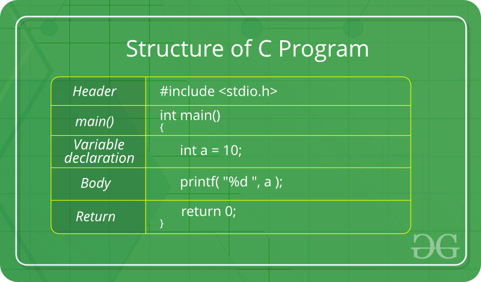

C LANGUAGE

INTRODUCTION:
C is a procedural programming language. It was initially developed by Dennis Ritchie in the year 1972. It was mainly developed as a system programming language to write an operating system. The main features of C language include low-level access to memory, a simple set of keywords, and clean style, these features make C language suitable for system programmings like an operating system or compiler development.
Many later languages have borrowed syntax/features directly or indirectly from C language. Like syntax of Java, PHP, JavaScript, and many other languages are mainly based on C language. C++ is nearly a superset of C language (There are few programs that may compile in C, but not in C++).
Beginning with C programming:
1) Structure of a C program:After the above discussion, we can formally assess the structure of a C program. By structure, it is meant that any program can be written in this structure only. Writing a C program in any other structure will hence lead to a Compilation Error.

source: geeksforgeeks.org
The components of the above structure are:
Header Files Inclusion: The first and foremost component is the inclusion of the Header files in a C program.
A header file is a file with extension .h which contains C function declarations and macro definitions to be shared between several source files.
Some of C Header files:
stddef.h – Defines several useful types and macros.
stdint.h – Defines exact width integer types.
stdio.h – Defines core input and output functions
stdlib.h – Defines numeric conversion functions, pseudo-random network generator, memory allocation
string.h – Defines string handling functions
math.h – Defines common mathematical functions
Syntax to include a header file in C:#include
Main Method Declaration: The next part of a C program is to declare the main() function. The syntax to declare the main function is:
Syntax to Declare main method:
Example:
Example:
Header Files Inclusion: The first and foremost component is the inclusion of the Header files in a C program.
A header file is a file with extension .h which contains C function declarations and macro definitions to be shared between several source files.
Some of C Header files:
stddef.h – Defines several useful types and macros.
stdint.h – Defines exact width integer types.
stdio.h – Defines core input and output functions
stdlib.h – Defines numeric conversion functions, pseudo-random network generator, memory allocation
string.h – Defines string handling functions
math.h – Defines common mathematical functions
Syntax to include a header file in C:#include
Main Method Declaration: The next part of a C program is to declare the main() function. The syntax to declare the main function is:
Syntax to Declare main method:
int main()
{}
Variable Declaration: The next part of any C program is the variable declaration. It refers to the variables that are to be used in the function. Please note that in the C program, no variable can be used without being declared. Also in a C program, the variables are to be declared before any operation in the function.Example:
int main()
{
int a;
.
.
Body: Body of a function in C program, refers to the operations that are performed in the functions. It can be anything like manipulations, searching, sorting, printing, etc.Example:
int main()
{
int a;
printf("%d", a);
.
.
Return Statement: The last part in any C program is the return statement. The return statement refers to the returning of the values from a function. This return statement and return value depend upon the return type of the function. For example, if the return type is void, then there will be no return statement. In any other case, there will be a return statement and the return value will be of the type of the specified return type.
How to execute a program:
Inorder to execute the above program, we need to have a compiler to compile and run our programs. There are certain online compilers like https://ide.geeksforgeeks.org/, http://ideone.com/ or http://codepad.org/ that can be used to start C without installing a compiler.Windows: There are many compilers available freely for compilation of C programs like Code Blocks and Dev-CPP. We strongly recommend Code Blocks.
Linux: For Linux, gcc comes bundled with the linux, Code Blocks can also be used with Linux.